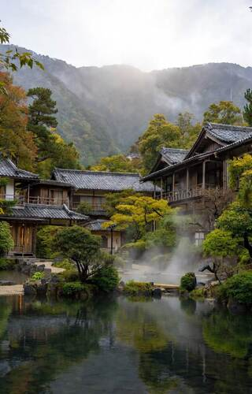
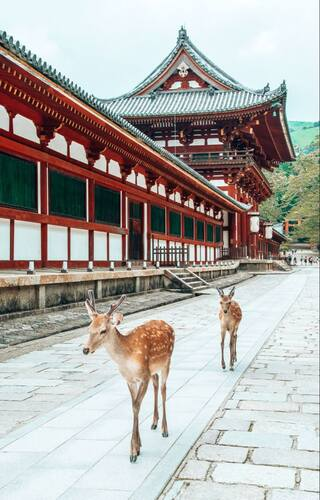
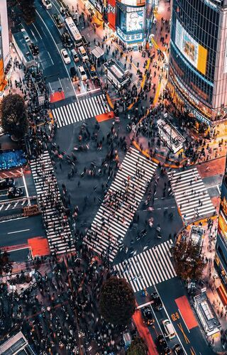
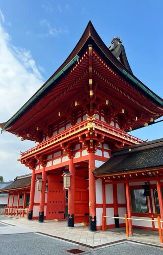
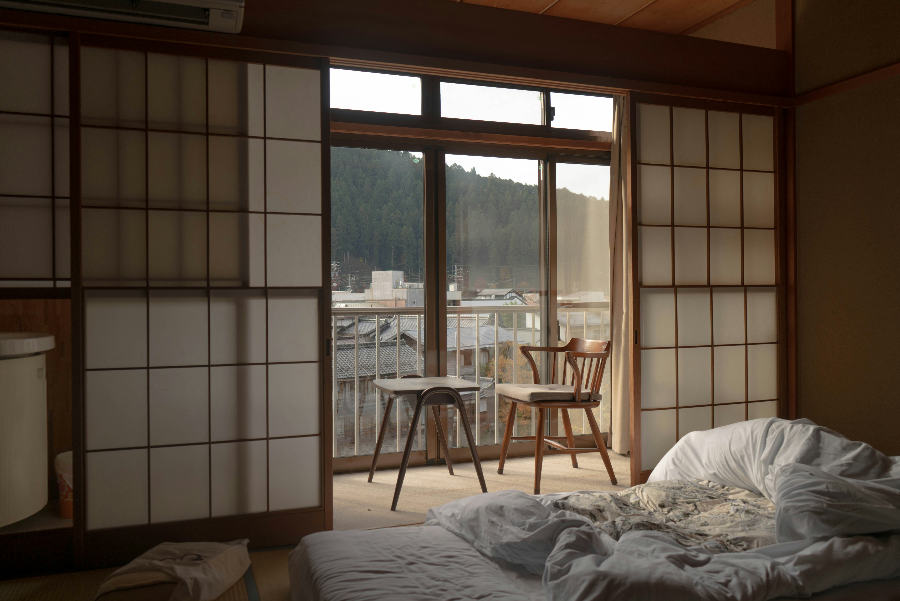
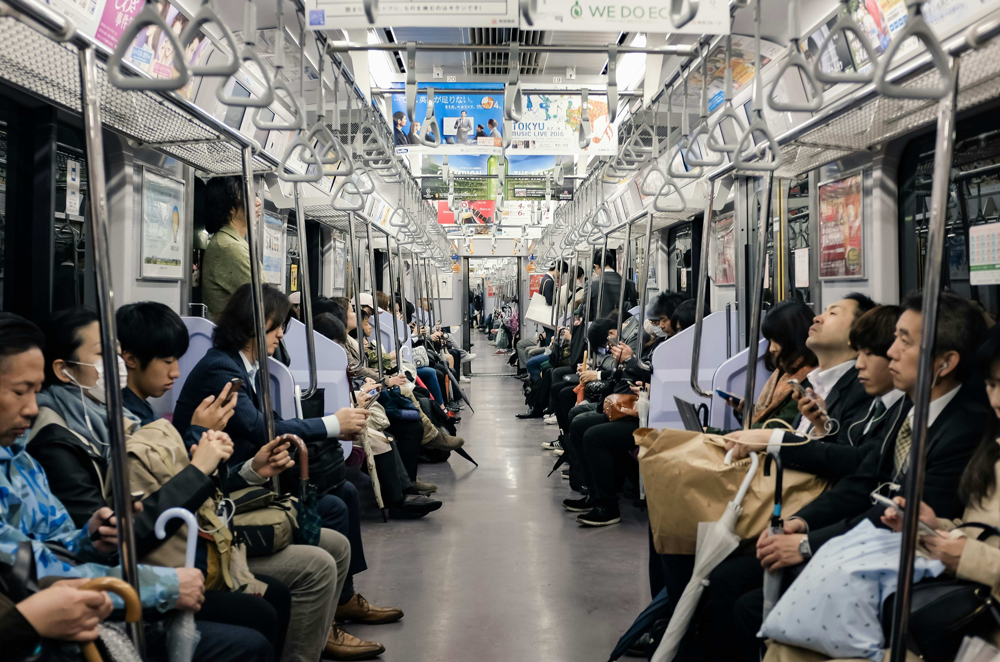

DENİZ KEVSER AKBEN TOURS
Japan tour for peaceful holidays with your family.

Hakone Onsen is a famous hot spring district offering healing waters and stunning Mount Fuji views. Guests can enjoy scenic Lake Ashi, traditional Ryokan stays, and unique volcanic black eggs. It is the ultimate destination for nature, history, and relaxation in Japan.
More Details
Nara Park is a vast public park famous for its hundreds of freely roaming sacred deer and ancient temples. Visitors can interact with the friendly deer or explore the magnificent Todai-ji Temple, home to Japan's largest bronze Buddha. It is a unique place.
More Details
Shibuya Crossing is the world's busiest intersection, famous for its organized chaos as hundreds of people cross from every direction at once. Surrounded by neon lights and giant screens, it captures the high-energy essence of modern Tokyo. It is a must-see.
More Details
Fushimi Inari is Kyoto's iconic shrine famous for its thousands of vibrant orange torii gates that form endless tunnels up the mountain. Dedicated to the god of rice and prosperity, the trail offers a spiritual journey through a beautiful forest and scenery.
More Detailseverything about local tours.
accommodation, transportation and everything.

